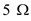
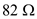
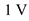
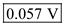

Apply voltage division rule to find the relation between the ratio of regulated output voltage and the supply voltage with the ratio of connected resistance values.
Where
is the change in the regulated output voltage,
is the supply voltage,
is the resistor connected across the output terminal and is the resistor connected in series with the voltage source.
Substitute  for and for  .
.
Substitute  for .
Thus, the change in the regulated output voltage is .